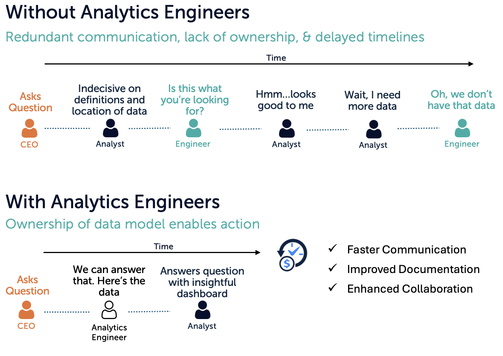
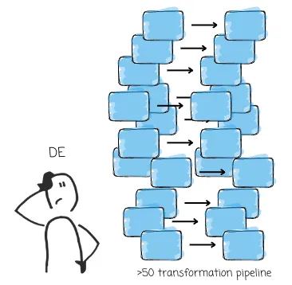
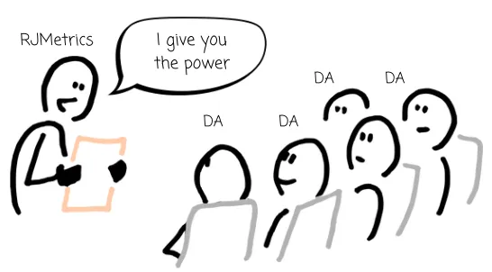

Before dbt and cloud warehouses, data teams typically split into just two roles. Today there’s a third role in the middle — and that’s the role you’re training for in this course.
| Role | Owns |
|---|---|
| Data engineer | The plumbing — ingestion, ETL pipelines, warehouse infrastructure, table creation. |
| Data analyst | Querying the warehouse to answer business questions, building dashboards. |
This split worked when transformations happened in code outside the warehouse and only finished tables landed inside. The data engineer wrote and maintained those pipelines; the analyst just queried the output.
Cloud warehouses + ELT + dbt blew up that split. Transformations now happen inside the warehouse as SQL, which means anyone fluent in SQL can build production data models. So a third role emerged.
| Role | Owns the … | Day-to-day |
|---|---|---|
| Data engineer | E and L | Get raw data into the warehouse: ingestion tools (Fivetran, Airbyte), custom connectors, streaming, infra, observability, cost management. |
| Analytics engineer | T | Turn raw warehouse data into clean, tested, documented marts using dbt. Owns the staging → intermediate → marts pipeline. Writes SQL, YAML, and tests. |
| Data analyst | The questions | Builds dashboards, runs ad-hoc analysis, partners with stakeholders. Consumes the marts the analytics engineer publishes. |

In 2016, while at RJMetrics, Tristan Handy built dbt to address the pain of complex data transformation pipelines. The pitch was almost ideological: encourage data analysts to take more responsibility for managing data transformations by adopting software-engineering best practices — modular SQL, version control, automated testing, code review.
It wasn’t an accident that this happened in the analyst world rather than the data-engineer world. Setting up a pipeline to move data from A to B is no trivial task. Data engineers must understand the source, the expected output format, and manage the underlying infrastructure: scaling Spark clusters, maintaining Airflow environments, optimizing transformation logic, ensuring data quality across potentially hundreds of pipelines. The complexity adds up fast.

A team of highly skilled data engineers is often required for large-scale systems, but not every company has the resources to build one. It’s common to find organizations — especially mid-sized businesses and startups — operating with one or two DEs.
A single data engineer can manage two or three pipelines well. What happens when that number grows to fifty? Workflows slow down because every pipeline needs time to develop, test, and deploy. Data quality slips, changes pile up, insights arrive late. The data engineer becomes the bottleneck and the data team struggles to keep up with business demands.

The ultimate goal is to make data more meaningful to the organization. A better way to manage the raw-to-usable-data process is to democratize the transformation rather than gate it behind a small group of engineers.
Imagine the alternative scenario: data analysts could take a more active role in transformation. Instead of waiting for a DE to implement every transformation they need, analysts self-serve, define, and build transformations independently. Because analysts deeply understand the business domain, they can ensure final datasets align with business needs from the start, rather than relying on multiple handoffs.
That’s the gap dbt was built to close — and it’s the gap the analytics engineer fills today.
Once SQL becomes the transformation language, two problems still show up:
The analytics engineer plugs that gap: they own the SQL transformations as engineering, with version control, testing, code review, CI, and documentation. dbt is the tool that makes this practical.
At a small company, one person often plays all three roles. As the team grows, the lines stay blurry — an analyst might write dbt models, a data engineer might build a dashboard. The roles describe responsibilities, not job titles.
This course is for someone who wants to own the T — the analytics engineer role, regardless of what your business card says. By the end you’ll be able to take raw tables in a warehouse, layer staging and marts on top, test them, document them, and ship them.
Press n when you’re ready for the next lesson.